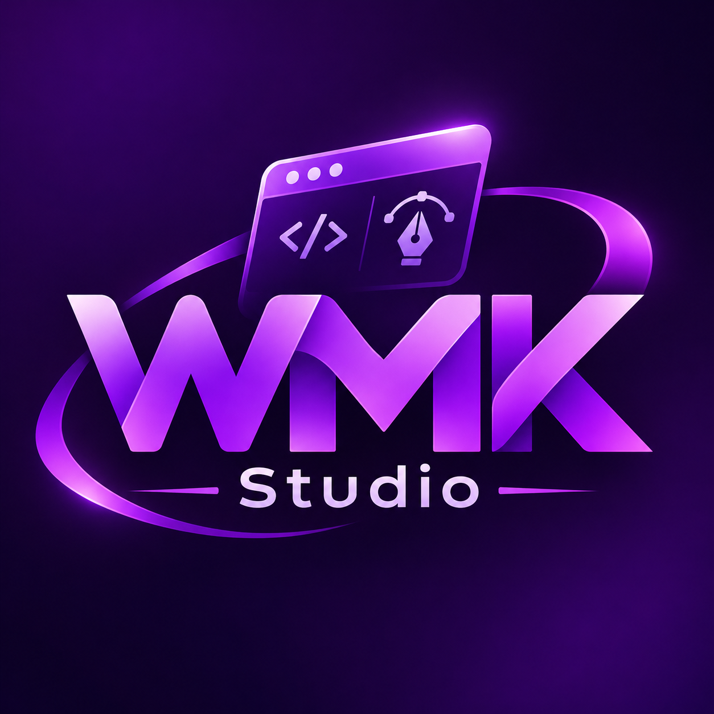

<!doctype html><html lang="pt-BR"><head><meta charset="utf-8"><meta name="viewport" content="width=device-width,initial-scale=1"><title>Raio X completo do WMK Studio — Academia WMK</title><style>:root{color-scheme:dark;--bg:#0B0217;--panel:#1B0736;--text:#F5E9FF;--muted:#B79CD9;--primary:#8A2BE2;--accent:#E036FF;--light:#E6B3FF;--border:#69418C}*{box-sizing:border-box}html{scroll-behavior:smooth}body{background:var(--bg);color:var(--text);font:15px/1.72 system-ui,'Segoe UI',sans-serif;margin:0}.wrapper{max-width:1150px;margin:auto;padding:25px}.brand{background:linear-gradient(120deg,#270b45,#0B0217);padding:35px max(22px,calc((100vw - 1100px)/2));border-bottom:2px solid #C026FF}.brand-inner{display:flex;gap:20px;align-items:center}.brand img{width:105px;height:105px;object-fit:contain}.brand h1{font-size:clamp(1.8rem,4vw,2.7rem);line-height:1.2;margin:6px 0}.brand p{color:#d9b7f0;margin:0}.pill{display:inline-block;border:1px solid #76469c;border-radius:30px;padding:2px 10px;font-size:.8rem;margin:8px 5px 0 0}h2{color:var(--light);font-size:1.48rem;margin-top:0}h3{color:#efceff;font-size:1.07rem}a{color:var(--light)}nav{display:flex;flex-wrap:wrap;gap:12px 20px;margin:10px 0 25px;padding-bottom:12px;border-bottom:1px solid #64358a}section{padding:23px;border:1px solid #64358a;border-radius:14px;background:#180a2e;margin:20px 0}p{margin:9px 0}ul li,ol li{margin:8px 0}table{border-collapse:collapse;width:100%;margin:15px 0}th,td{border:1px solid #613d7e;padding:9px 11px;text-align:left;vertical-align:top}th{background:#351550}td{overflow-wrap:anywhere}.note{background:#2c164b;border-left:4px solid var(--accent);padding:15px;border-radius:9px;margin:16px 0}.critical{border-left-color:#ffa96b}code{font-family:Consolas,monospace;color:#f0d4ff;background:#30104e;border-radius:4px;padding:2px 5px}pre{padding:17px;overflow:auto;background:#0b0419;border-radius:9px;border:1px solid #593780;font-family:Consolas,monospace;line-height:1.5}.status{display:inline-block;color:#e8baff;font-size:.78rem;background:#3b1a63;border-radius:5px;padding:2px 6px}footer{border-top:1px solid #61368a;margin-top:30px;padding:22px 0;color:var(--muted)}.cols{display:grid;grid-template-columns:repeat(3,minmax(0,1fr));gap:12px}.metric{background:#261043;border:1px solid #5d3385;padding:15px;border-radius:12px}.metric strong{display:block;color:#f4e3ff;font-size:1.7rem}.metric span{color:#c9aedf;font-size:.82rem}@media(max-width:730px){.wrapper{padding:12px}.brand{padding:24px 15px}.brand img{width:70px;height:70px}.cols{grid-template-columns:1fr}section{padding:14px}th,td{padding:7px}nav{gap:8px}}@media print{body,section,.brand{background:white;color:#111}h1,h2,h3{color:#602080}table td,table th{color:#111}.note{color:#222}nav{display:none}}</style></head><body><header class="brand"><div class="brand-inner"><div><span class="pill">RAIO X TÉCNICO</span><span class="pill">Código auditado</span><span class="pill">08/11/2026</span><h1>O que existe hoje no WMK Studio?</h1><p>Arquitetura, recursos reais, lacunas, templates, bibliotecas, MCP e o caminho para uma IA que siga o seu padrão de formulários.</p><p><strong>Walney Moreira Klein — walneyk@hotmail.com</strong></p></div></div></header><div class="wrapper"><nav><a href="#resumo">Resumo</a><a href="#estado">Estado real</a><a href="#arquitetura">Arquitetura</a><a href="#editor">Editor</a><a href="#templates">Templates</a><a href="#bibliotecas">Bibliotecas</a><a href="#ia">IA/MCP</a><a href="#plugins">Plugins</a><a href="#dados">Formatos</a><a href="#lacunas">Lacunas</a><a href="#roadmap">Roadmap</a><a href="#fontes">Fontes</a></nav><section id="resumo"><h2>1. Resumo executivo</h2>
<p>Este documento é um <strong>raio X técnico do código local</strong> do fork WMK Studio em <code>D:\Ferramentasigcraft</code>, na revisão <code>1af3f36</code> (08/11/2026). Foi construído pela leitura das pastas do workspace Rust, arquivos de documentação original e verificações de existência dos executáveis. Não é uma certificação integral de funcionamento.</p>
<div class="cols"><div class="metric"><strong>17</strong><span>Crates Rust no workspace</span></div><div class="metric"><strong>4</strong><span>Aplicações identificadas</span></div><div class="metric"><strong>8</strong><span>Templates nativos registrados</span></div></div>
<div class="note"><strong>Diagnóstico principal:</strong> o WMK Studio já tem uma engine avançada de design (componentes, variantes, estilos, variáveis, templates, histórico, exportadores) e interfaces de automação (CLI/MCP). Para atingir a visão de <em>criar sistemas com seu padrão</em>, o melhor é construir uma camada de biblioteca WMK + orquestrador de IA usando os comandos existentes, sem substituir o núcleo.</div>
</section><section id="estado"><h2>2. O que já existe, o que foi verificado e o que falta</h2>
<table><thead><tr><th>Área</th><th>Estado no código</th><th>O que foi verificado nesta auditoria</th></tr></thead><tbody><tr><td>Aplicativo desktop</td><td>Implementado</td><td>EXE WMK-Studio.exe existe; capturas anteriores demonstraram tela inicial, templates e editor</td></tr><tr><td>Frames, texto e painel de propriedades</td><td>Implementado</td><td>Código e capturas reais do cartão WMK</td></tr><tr><td>Componentes e instâncias</td><td>Implementado no código</td><td>Documentação e testes no repositório; exercício completo não repetido nesta auditoria</td></tr><tr><td>Variantes e propriedades de componentes</td><td>Implementado no código</td><td>Tipos variante, booleano, texto e troca de instância citados em docs/components-parity.md</td></tr><tr><td>Estilos e variáveis</td><td>Implementado no código</td><td>Cores, números, textos, booleanos, modos e coleções; uso real em grandes bibliotecas não homologado aqui</td></tr><tr><td>Bibliotecas locais e compartilhadas</td><td>Implementado no código</td><td>Publicação e vinculação de bibliotecas descritas; servidor não executado aqui</td></tr><tr><td>Templates internos</td><td>Implementado</td><td>Oito IDs registrados diretamente em templates.rs</td></tr><tr><td>CLI e servidor MCP</td><td>Código presente</td><td>figcraft-cli.exe não foi encontrado em target/release; compilar e testar separadamente</td></tr><tr><td>Plugins Wasm</td><td>Código/documentação presentes</td><td>Sandbox e permissões definidos; nenhum plugin WMK testado nesta auditoria</td></tr><tr><td>Editor Web e servidor</td><td>Código presente</td><td>Build/implantação e testes de rede não executados</td></tr><tr><td>Importação/exportação</td><td>Código presente</td><td>PNG/JPG/WebP/SVG/PDF documentados; roundtrip .wmk e cenários reais ainda precisam de teste</td></tr><tr><td>IA Ollama / Groq</td><td>Não implementada nativamente</td><td>Nenhuma referência a Ollama/Groq/OpenAI nos fontes Rust examinados; upstream explicita ausência de modelo in-app</td></tr><tr><td>Geração de aplicativos completos</td><td>Não implementada</td><td>Editor/protótipo não equivale a backend, banco de dados ou aplicação executável</td></tr></tbody></table>
<p><strong>Como ler os estados:</strong> “implementado no código” = existem módulos/comandos; “testado” = existe evidência de execução ou teste específico; “proposto” = não está entregue. Não confundir presença de testes escritos com testes rodados nesta auditoria.</p>
</section><section id="arquitetura"><h2>3. Arquitetura Rust em camadas</h2>
<pre>WMK Studio (desktop)        figcraft-web (WASM)
        |                           |
        +----------- UI ------------+
                     |
         figcraft-ui-egui / APIs
                     |
                figcraft-engine
                     |
      +--------------+--------------+
      |              |              |
  figcraft-doc   figcraft-layout  figcraft-text
      |              |              |
      +----------- render -----------+
                  /               SVG / PDF     formatos
                     |
        CLI / MCP / plugin / servidor
</pre>
<p>O diagrama simplifica a arquitetura: o core não depende da UI. A engine concentra registro de comandos, seleção, histórico, layouts, templates e exportações. A UI chama os comandos da engine; CLI/MCP e plugins também podem acessá-los com contratos e permissões apropriados.</p>
<h3>Crates identificados</h3>
<table><thead><tr><th>Crate (pasta)</th><th>Responsabilidade</th></tr></thead><tbody><tr><td>geom</td><td>Geometria de formas e transformações</td></tr><tr><td>color</td><td>Cores, pinturas e espaços de cor</td></tr><tr><td>doc</td><td>Modelo de documento, árvore de nós e propriedades</td></tr><tr><td>layout</td><td>Auto layout, grid, regras de tamanho e restrições</td></tr><tr><td>text</td><td>Texto, fontes e layout tipográfico</td></tr><tr><td>pathops</td><td>Operações booleanas e traços vetoriais</td></tr><tr><td>render</td><td>Renderização CPU de desenho, efeitos e imagens</td></tr><tr><td>format</td><td>Leitura/gravação nativa, importação e formatos</td></tr><tr><td>svg</td><td>Importação/exportação SVG</td></tr><tr><td>pdf</td><td>Exportação PDF</td></tr><tr><td>vectordrawable</td><td>Exportação Android Vector Drawable</td></tr><tr><td>collab</td><td>Modelo de sincronização de documentos</td></tr><tr><td>collab-net</td><td>Transporte de rede de colaboração</td></tr><tr><td>engine</td><td>Comandos, histórico, ferramentas, componentes, bibliotecas e protótipos</td></tr><tr><td>ui-egui</td><td>Interface desktop, Canvas, painéis, ferramentas e menus</td></tr><tr><td>mcp</td><td>Servidor Model Context Protocol (headless/attached)</td></tr><tr><td>plugin</td><td>Extensões WebAssembly isoladas em sandbox</td></tr></tbody></table>
<h3>Aplicações do workspace</h3>
<table><thead><tr><th>Pasta</th><th>Aplicação</th><th>Situação</th></tr></thead><tbody><tr><td>figcraft</td><td>Desktop WMK Studio</td><td>Código do app e interface; executável Windows Release disponível.</td></tr><tr><td>figcraft-cli</td><td>Automação e comandos</td><td>Código presente; executável Release não encontrado nesta auditoria.</td></tr><tr><td>figcraft-web</td><td>Editor em navegador</td><td>Código WASM/web presente; deploy público e teste funcional não confirmados.</td></tr><tr><td>figcraft-server</td><td>Servidor de colaboração</td><td>Código presente; serviço operacional não configurado nem testado nesta auditoria.</td></tr></tbody></table>
<p><strong>Fonte:</strong> <code>Cargo.toml</code>, <code>docs/architecture.md</code>, <code>apps/</code> e <code>crates/</code>. Nomes internos <code>figcraft-*</code> permanecem por compatibilidade do código e não são automaticamente marca visível do WMK Studio.</p>
</section><section id="editor"><h2>4. Editor visual: recursos que interessam ao seu trabalho</h2>
<ul><li><strong>Canvas e camadas:</strong> Frames, formas, textos, seções, grupos, páginas, máscaras, vetor, seleção e ordem de desenho.</li><li><strong>Propriedades:</strong> X/Y/W/H, rotação, preenchimento, borda, opacidade, raio, efeitos e tipografia.</li><li><strong>Layout:</strong> auto layout vertical/horizontal, wrap, grid, gaps, padding, restrições, tamanhos hug/fill/fixed e alinhamento.</li><li><strong>Componentes:</strong> principal, instância, overrides e variantes; propriedades tipadas de texto, booleano e troca de instância; biblioteca e painel de recursos.</li><li><strong>Design system:</strong> estilos de cor, texto, efeitos e grid; variáveis de cor, número, string e booleano; coleções e modos.</li><li><strong>Protótipos:</strong> vínculos entre telas, transições, interações e apresentação. Não executam regras de negócio de um sistema real.</li><li><strong>Histórico:</strong> undo/redo, operações de comando e snapshots.</li><li><strong>Exportação:</strong> opções documentadas PNG, JPG, WebP, SVG, PDF e Android Vector Drawable; importação .fig e exportação .fig experimentais.</li></ul>
<div class="note"><strong>Boa notícia:</strong> para ter seu equivalente às classes visuais do VFP, o núcleo de <strong>componentes + estilos + variáveis + bibliotecas</strong> já existe. Reutilize-o para construir <code>WMKForm</code>, <code>WMKInput</code>, <code>WMKButton</code>, <code>WMKGrid</code> e outros padrões.</div>
<p><strong>Evidências:</strong> <code>docs/components-parity.md</code>, <code>crates/doc/src/</code>, <code>crates/engine/src/cmd/</code>, <code>crates/engine/src/content/</code>.</p>
</section><section id="templates"><h2>5. Templates que já vêm no programa</h2>
<p>São documentos <strong>editáveis</strong> construídos por funções Rust e registrados em <code>crates/engine/src/content/templates.rs</code>. Não são apenas thumbnails; também não constituem uma biblioteca WMK específica para sistemas comerciais.</p>
<table><thead><tr><th>ID exato</th><th>Nome do modelo</th><th>Conteúdo</th></tr></thead><tbody><tr><td>mobile-app</td><td>Aplicativo mobile</td><td>Quatro telas de exemplo e fluxo de protótipo</td></tr><tr><td>landing-page</td><td>Landing page</td><td>Página de apresentação de produto</td></tr><tr><td>dashboard</td><td>Dashboard</td><td>Indicadores, gráficos e tabela</td></tr><tr><td>design-system</td><td>Design system starter</td><td>Estilos, variáveis e componentes</td></tr><tr><td>wireframe-kit</td><td>Kit de wireframes</td><td>Esboços de telas e componentes</td></tr><tr><td>social-posts</td><td>Postagens em redes sociais</td><td>Tamanhos comuns de publicações</td></tr><tr><td>slides</td><td>Slides</td><td>Telas de apresentação</td></tr><tr><td>icon-set</td><td>Kit de ícones</td><td>Ícones vetoriais e grades</td></tr></tbody></table>
<p>Arquivos de construção: <code>crates/engine/src/content/mobile.rs</code>, <code>landing.rs</code>, <code>dashboard.rs</code>, <code>design_system.rs</code>, <code>wireframe.rs</code>, <code>social.rs</code>, <code>slides.rs</code> e <code>icon_set.rs</code>. O projeto também disponibiliza cinco arquivos de exemplo na pasta <code>examples/</code>.</p>
<h3>O que falta para a sua identidade</h3>
<p>Precisamos criar templates WMK como <code>wmk-login</code>, <code>wmk-cadastro</code>, <code>wmk-consulta-grid</code>, <code>wmk-financeiro</code> e <code>wmk-landing</code>, definindo também componentes, estilos, documentação e comportamento visual. Esses IDs ainda são <strong>propostas</strong>.</p>
</section><section id="bibliotecas"><h2>6. Bibliotecas e componentes: o que reaproveitar</h2>
<table><thead><tr><th>Sua necessidade</th><th>Já existe?</th><th>Caminho recomendado</th></tr></thead><tbody><tr><td>Botões e campos padronizados</td><td>Sim, componentes e instâncias</td><td>Criar componentes principais WMK em biblioteca local</td></tr><tr><td>Estados Normal/Hover/Disabled</td><td>Variantes documentadas</td><td>Definir conjuntos de variantes e semântica em JSON próprio</td></tr><tr><td>Tema roxo e outros temas</td><td>Estilos, variáveis e modos</td><td>Centralizar tokens de fonte, cor, spacing e efeito</td></tr><tr><td>Formulário com vários controles</td><td>Frames + auto layout + componentes</td><td>Criar templates compostos por elementos reutilizáveis</td></tr><tr><td>Biblioteca compartilhada entre arquivos</td><td>Suporte local e servidor</td><td>Começar com bibliotecas locais; teste de atualização e versões</td></tr><tr><td>Catalogar componentes para IA</td><td>Não há catálogo WMK semântico pronto</td><td>Criar manifesto JSON com nomes, papéis, parâmetros e referências aos componentes reais</td></tr><tr><td>Gerar código web funcional a partir dos controles</td><td>Dev Mode/codegen parcial</td><td>Projetar gerador próprio por framework; backend separado</td></tr></tbody></table>
<p>O <strong>catálogo semântico</strong> será a ponte para IA: ele precisa dizer não só como o componente se parece, mas sua finalidade (ex.: campo de CPF, botão Salvar), estados, valores permitidos, acessibilidade e qual variante usar. A referência ao componente visual deve ser estável; as regras CSS serão geradas/consumidas por adaptadores específicos.</p>
</section><section id="ia"><h2>7. Automação MCP, CLI e IA: diagnóstico rigoroso</h2>
<h3>Recursos herdados</h3><p><code>docs/mcp.md</code> documenta servidor MCP por JSON-RPC sobre stdio, dois modos: <strong>headless</strong> (documento em processo sem janela) e <strong>attached</strong> (modifica sessão visual em execução com canal de controle local). O servidor pode acionar comandos de design, inspecionar a estrutura e gerar imagens para validação. A CLI é compilada separadamente via <code>cargo build --release -p figcraft-cli</code>.</p>
<div class="note critical"><strong>Verificação material:</strong> nesta máquina existe <code>target/release/WMK-Studio.exe</code>, porém não existe <code>target/release/figcraft-cli.exe</code>. Logo, o release atual não prova disponibilidade prática da automação MCP. Antes de usá-la, compilar a CLI, conferir a ajuda e fazer teste ponta a ponta sem arquivos pessoais.</div>
<h3>O que NÃO existe ainda</h3><p>A documentação original em <code>docs/gaps.md</code>, seção <em>AI features</em>, declara que não existe modelo de IA embutido no aplicativo. A busca nos fontes Rust do workspace por <code>ollama</code>, <code>groq</code> e <code>openai</code> não encontrou integração nativa. Portanto, o painel WMK AI Builder, gestão de provedores e geração de telas por prompt ainda são <strong>propostas</strong>.</p>
<h3>Arquitetura de integração recomendada</h3>
<pre>Usuário: "Crie meu cadastro financeiro"
                |
        Parser/roteador de intenção
                |
     Templates + catálogo WMK de componentes
                |
      Ollama / Groq / provedor configurado
                |
      JSON de design restrito por schema
                |
   Validar IDs, tipos, dimensões e comandos
                |
           Preview + confirmação
                |
       Engine de comandos via MCP/CLI
                |
       Documento .wmk + undo + logs</pre>
<p>Evitar: permitir que a IA execute shell arbitrário, edite diretamente os bytes do arquivo nativo, use nomes de comandos inventados, sobrescreva projetos sem permissão ou exponha a chave Groq. Priorizar armazenamento local de segredos, validação antes da mutação, logs e rollback.</p>
</section><section id="plugins"><h2>8. Plugins e outras extensões</h2>
<p>O projeto contém <code>crates/plugin</code> e uma workspace própria em <code>plugins/</code> com SDK e exemplos. O plugin descrito pelo upstream é um módulo WebAssembly e um manifesto JSON que solicita permissões. O sandbox não disponibiliza rede, arquivo ou relógio diretamente ao plugin; os comandos autorizados passam pela engine, que pode reverter falhas.</p>
<p><strong>Consequência para IA:</strong> não é recomendável tentar chamar Ollama/Groq diretamente de dentro desse sandbox. O provedor deve ficar em um serviço/adaptador externo autorizado, ou numa integração nativa cuidadosamente isolada; o plugin pode ser a UI cliente, dependendo das permissões e pontes que implementarmos.</p>
<p>Documentação: <code>docs/plugins.md</code>. Não foram executados builds nem testes funcionais de plugins nesta auditoria.</p>
</section><section id="dados"><h2>9. Formatos, persistência e publicação</h2>
<p>A origem usa contêiner nativo baseado em ZIP contendo <code>document.json</code> e recursos; o fork mudou a extensão preferencial para <code>.wmk</code> e manteve compatibilidade com <code>.figcraft</code>. A leitura detalhada das regras está em <code>crates/format</code> e nos manuais <code>formato-wmk.html</code> e <code>docs/file-format-parity.md</code>.</p>
<p>A versão Beta com EXE e documentação foi distribuída como ZIP portátil via GitHub Releases, mas isso não significa que todas as rotinas de arquivo tenham passado por testes de produção em diferentes computadores. Gerar aplicações web com CRUD, autenticação e banco exige um subsistema próprio além de design/exportação.</p>
</section><section id="lacunas"><h2>10. Lacunas atuais e riscos</h2>
<table><thead><tr><th>Lacuna</th><th>Impacto</th><th>Prioridade</th></tr></thead><tbody><tr><td>Ausência de IA embutida/Ollama/Groq</td><td>Não gera telas por prompt no desktop atual</td><td>Alta para a visão WMK AI</td></tr><tr><td>Ausência de manifesto semântico WMK</td><td>IA não sabe que componente corresponde a um campo ou botão de negócio</td><td>Alta</td></tr><tr><td>CLI não compilada nesta distribuição</td><td>MCP não está demonstrado com executável entregue</td><td>Alta, primeiro teste técnico</td></tr><tr><td>Templates WMK comerciais ausentes</td><td>Gerador dependeria dos oito modelos genéricos</td><td>Alta</td></tr><tr><td>Qualidade da tradução variável</td><td>Menus podem conter inglês e jargão</td><td>Média</td></tr><tr><td>Compatibilidade .wmk e formatos externos</td><td>Risco de dados/estilos em arquivos reais</td><td>Alta antes de estável</td></tr><tr><td>Colaboração/servidor/plugins sem homologação WMK</td><td>Segurança, manutenção, disponibilidade</td><td>Média; adiar versão inicial</td></tr><tr><td>Geração de aplicativo executável não implementada</td><td>Design não equivale a frontend/backend</td><td>Projeto separado por fases</td></tr><tr><td>Capturas de tela e tutoriais completos ainda incompletos</td><td>Iniciantes precisam de mais documentação visual</td><td>Alta para Academia WMK</td></tr></tbody></table>
<p>O upstream lista outros limites em <code>docs/gaps.md</code>: importação .fig incompleta, bibliotecas de equipe/contas, alguns aspectos de acessibilidade, versões móveis e funcionalidades específicas. Os números de porcentagem dessa documentação são estimativas do projeto original, não certificação do fork.</p>
</section><section id="roadmap"><h2>11. Roadmap recomendado, sem reinventar o editor</h2>
<table><thead><tr><th>Etapa</th><th>Entregáveis reais</th><th>Critério de aceite</th></tr></thead><tbody><tr><td>R0 — Auditoria/testes</td><td>Compilar CLI; inventariar comandos; testar criação, salvar, reabrir e undo</td><td>Um projeto simples gerado por comandos e reaberto no desktop</td></tr><tr><td>R1 — WMK Design System</td><td>Tokens de tema; biblioteca com Button, Input, Select, Card, Form e Grid visual</td><td>Cada elemento editável, reutilizável e com estilo aplicado</td></tr><tr><td>R2 — Template Studio</td><td>Login, Cadastro e Consulta com Grid originais</td><td>Templates registrados e exibidos corretamente na tela inicial</td></tr><tr><td>R3 — Catálogo semântico</td><td>component-registry.json com contratos, prop types, estados e IDs</td><td>Validador rejeita referências inexistentes</td></tr><tr><td>R4 — IA local</td><td>Adaptador Ollama com JSON Schema e prévia</td><td>Prompt de login produz plano válido, sem executar comandos desconhecidos</td></tr><tr><td>R5 — Executor</td><td>MCP/engine cria documentos e exibe log/undo</td><td>Resultado .wmk abre e mantém componentes vinculados</td></tr><tr><td>R6 — Groq + provedores</td><td>API key local protegida; timeouts/429; troca de modelo</td><td>Mesmo prompt reproduz contrato compatível em dois provedores</td></tr><tr><td>R7 — Apps maiores</td><td>Templates financeiro, comércio, landing; multitelas</td><td>Protótipos coerentes, biblioteca reutilizada e testes de regressão</td></tr><tr><td>R8 — Gerador de código</td><td>Adaptador HTML/CSS/TypeScript e testes</td><td>Código front-end funcional, sem supor backend pronto</td></tr></tbody></table>
<p><strong>Não começar recriando:</strong> canvas, árvore de nós, registro de comandos, arquivos ZIP nativos, variants e sistema de estilos. Eles já estão presentes. Começar pelos componentes WMK e por uma prova de conceito da CLI é mais seguro e econômico.</p>
</section><section id="fontes"><h2>12. Arquivos-fonte consultados e como continuar a auditoria</h2>
<ul><li><code>Cargo.toml</code> — membros do workspace e dependências locais</li><li><code>docs/architecture.md</code> — arquitetura, engine, formatos e UI</li><li><code>docs/components-parity.md</code> — variantes, estilos, variáveis, bibliotecas, limitações</li><li><code>docs/gaps.md</code> — lacunas, especialmente seção “AI features”</li><li><code>docs/mcp.md</code> — servidor MCP e segurança de arquivos</li><li><code>docs/cli.md</code> — CLI e subcomandos</li><li><code>docs/plugins.md</code> — plugins e permissões</li><li><code>docs/file-format-parity.md</code> — importações e exportações</li><li><code>crates/engine/src/content/templates.rs</code> — registro real dos oito templates</li><li><code>apps/figcraft-cli/src/main.rs</code> — dispatch do modo MCP</li><li><code>crates/engine/src/cmd/</code> — comandos da engine</li><li><code>crates/doc/src/</code> — entidades visuais do documento</li></ul>
<div class="note">O código possui milhares de anotações de teste unitário ao longo do workspace; a contagem textual não comprova execução nem cobertura. Nesta auditoria inspecionamos fontes e documentação e conferimos arquivos existentes. <strong>Não executamos a suíte completa de testes do workspace, builds Web/Server ou integração com IA.</strong></div>
<p><a href="https://github.com/WalneyNF/WMK-Studio">Repositório do WMK Studio</a> · <a href="index.html">Central de manuais</a> · <a href="manual-design-para-programadores-e-ia.html">Design para programadores e IA</a></p>
</section><footer>WMK Studio — documentação e personalização de Walney Moreira Klein • walneyk@hotmail.com<br>Código original: FigCraft, ArtCraft Team e contribuidores. Licenças MIT ou Apache-2.0 e atribuições originais preservadas.</footer></div></body></html>